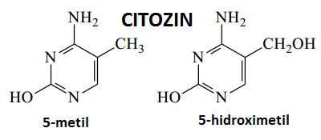
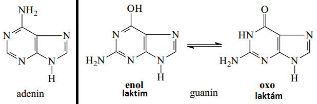
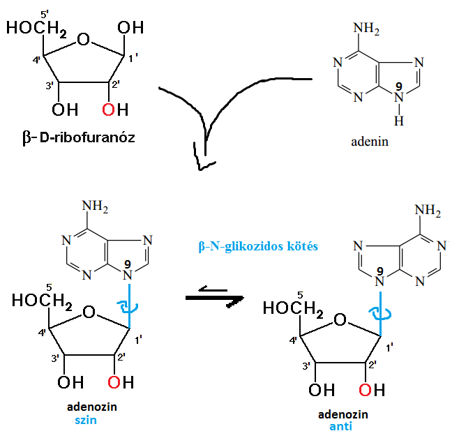

Képletek
glicin

alanin

valin

leucin

izoleucin

szerin

treonin

cisztein & cisztin

metionin

aszparaginsav

aszparagin

glutaminsav

glutamin
lizin

arginin

fenil-alanin

tirozin

hisztidin

triptofán
szelenocisztein

prolin

citozin
- 5metil jelentősége ► DNS silenceléskor ilyen lesz 

5metil / 5hidroximetil képlete?
timin

uracil
adenin
-

guanin
ammónium-szulfát
-
[(NH4)2SO4]
adenozin képlete?
-
purinnál 9 és 1' között van a β-N-glikozidos kötés!!!

uridin képlete?
-
pirimidinnél 1 és 1' között van a β-N-glikozidos kötés!!!

bázispárok

SDS
urea
guanidin-klorid

pirrol
hem
- 4db pirrol, melyeket -C= (ún. metin-csoport) kapcsol össze
- 2pirrol-ban nincs hidrogén
- másik 2pirrol, ha lead 2protont, akkor 2x negatív töltésű lesz ➜ eloszlik a 4 N-on, így középen Fe2+/Fe3+ képesek megkötni ➜ együtt alkotják a hem-et
- delokalizált elektronokból mi következik? ► aromás vegyület(hisz számuk annyi) ➜ stabil és egysíkú az egész
- oldalláncai
- ionos ➜ 2db proprionsav ➜ helyzete ► felszín felé orientált
- apoláros ➜ 2db vinil és 4db metil ➜ funkció ► myoglobin apoláros belsejével London-kötések
- hem milyen vegyület? ► kelát-komplex


porfirin
hem = porfirin -2H + Fe2+/Fe3+


 Ribonukleáz A nevű fehérje(enzim) vizsgálatát végezte. Ebben 4db S-S kötés van. Ureával H-kötéseket szakította fel, merkaptoetanollal az S-S kötéseket bontotta fel. Első lépésben hozzáadta mindkettőt. Második lépést többféleképpen végezte el.
Ribonukleáz A nevű fehérje(enzim) vizsgálatát végezte. Ebben 4db S-S kötés van. Ureával H-kötéseket szakította fel, merkaptoetanollal az S-S kötéseket bontotta fel. Első lépésben hozzáadta mindkettőt. Második lépést többféleképpen végezte el. 


 ()
()


 . Azonban ez függ a hidrogén környezetétől is, hogy ott milyen atomokkal stb. van kölcsönhatásban. Így ez alapján meghatározható a szerkezete.
. Azonban ez függ a hidrogén környezetétől is, hogy ott milyen atomokkal stb. van kölcsönhatásban. Így ez alapján meghatározható a szerkezete.

{kind=link}